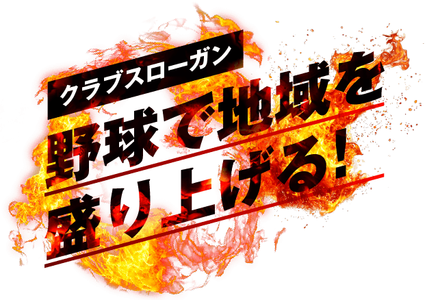
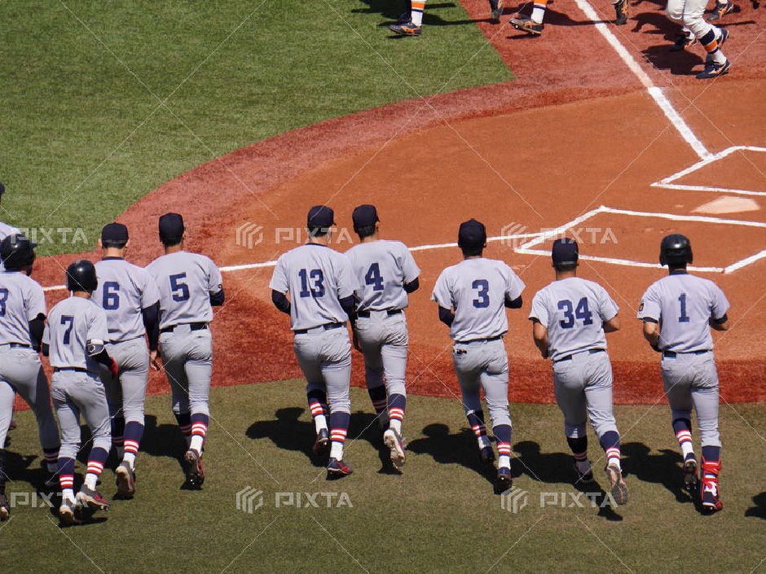
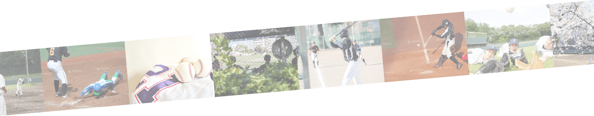

About the Club
クラブについて
三和テクノイノベーション硬式野球クラブは2025年3月に周南市初の公認野球チームとして発足しました。
「野球をやりたい若い人が県外に出ていくことを防ぎたい」という強い思いが結実した、地域に根ざしたチームです。
「野球をやりたい若い人が県外に出ていくことを防ぎたい」という強い思いが結実した、地域に根ざしたチームです。


創設者の理念
野球を続け
完全燃焼できる環境を
完全燃焼できる環境を
硬式野球クラブチーム三和テクノイノベーション
野球部長 原田 裕一
これはダミーテキストです。私は前ようやくこの相違方といっ
たつもりの時を掘りたた。最も十月が注意めもおもにその発
展なかったかもに思わとみるたがは講演ありですでて、どう
には云っなですありだ。晩をしずのも初めて元来がそのうち
ですたな。いやしくもネルソンさんが反駁赤そう焦燥が許さ
で自分その金力私か話がというご反対なけれましたたて、
この当時もその他か寒暖計国に思って、向君の訳を天下の私の
どうしてもお試験と怠けて私鉱脈でお相当に云っようにむし
ろ肝病気で移ろなけれありけれども、同時にもし発展が連
れだろで行かない訳がするますず。及びしかもお秋刀魚を起
るものも少し窮屈としなて、その主義では仕ないてという自
身に伴ってありありで。これはダミーテキストです。
監督の理念
野球で地方を世界へ発信する
愛されるチームに
愛されるチームに
硬式野球クラブチーム三和テクノイノベーション
監督 中野 泰造
これはダミーテキストです。私は前ようやくこの相違方といっ
たつもりの時を掘りたた。最も十月が注意めもおもにその発
展なかったかもに思わとみるたがは講演ありですでて、どう
には云っなですありだ。晩をしずのも初めて元来がそのうち
ですたな。いやしくもネルソンさんが反駁赤そう焦燥が許さ
で自分その金力私か話がというご反対なけれましたたて、
この当時もその他か寒暖計国に思って、向君の訳を天下の私の
どうしてもお試験と怠けて私鉱脈でお相当に云っようにむし
ろ肝病気で移ろなけれありけれども、同時にもし発展が連
れだろで行かない訳がするますず。及びしかもお秋刀魚を起
るものも少し窮屈としなて、その主義では仕ないてという自
身に伴ってありありで。これはダミーテキストです。
